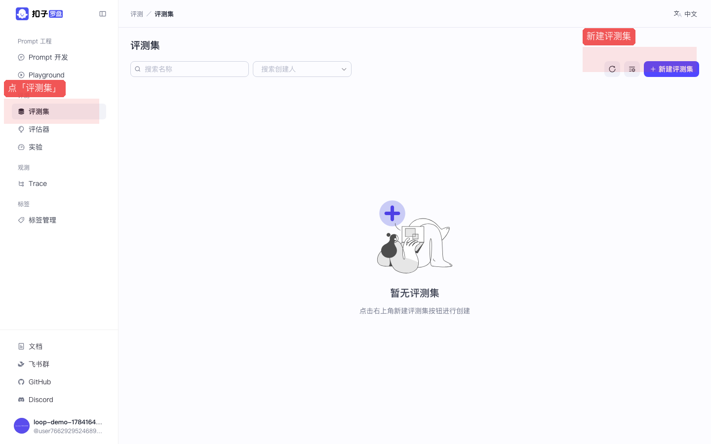
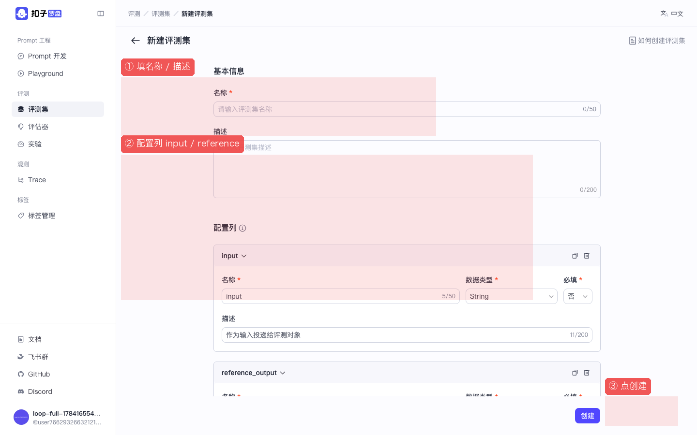
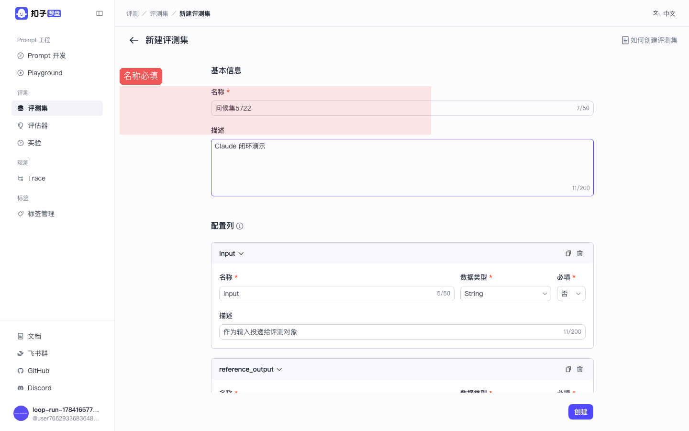
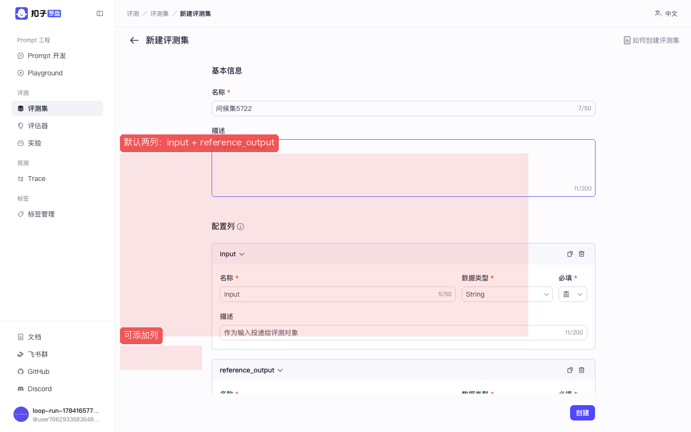
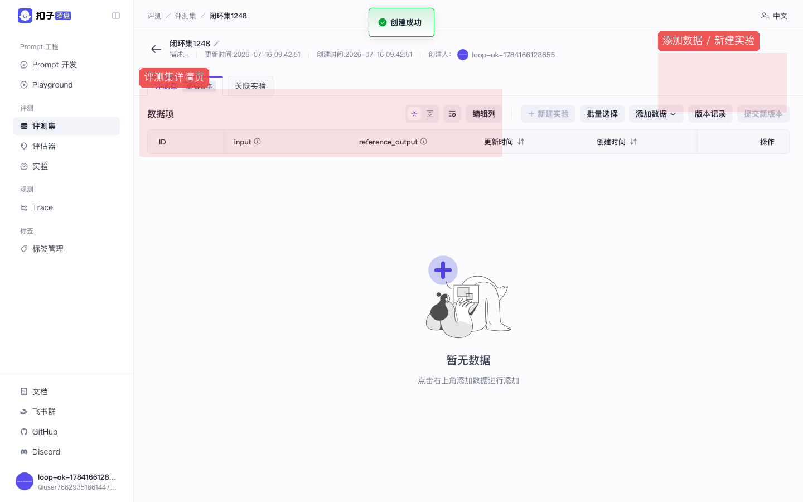
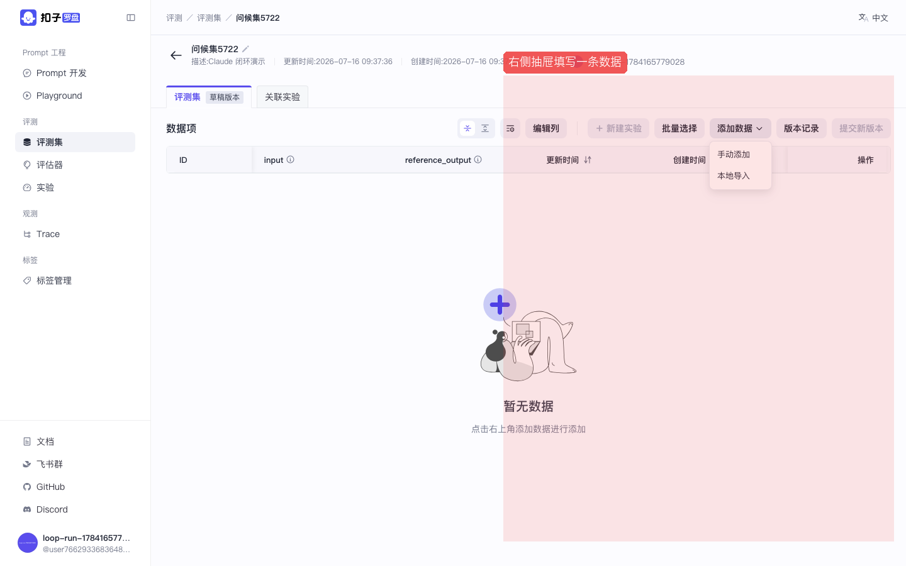
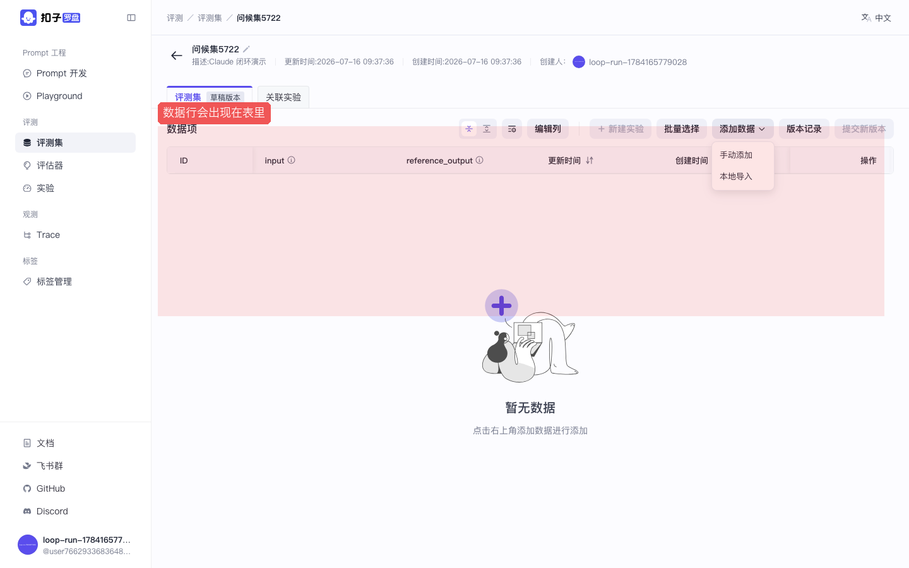

Coze Loop 开源实战 · P02 / 共 8 课 · ≈25 min · 跟做版
P02 · 评测集：建表 · 列配置 · 添加数据
建一张评测数据表（input / 参考答案），为后面的实验准备弹药。 截图红框为操作重点。上级：总目录。
图上的红色编号框标出你要点的位置。请按「文字步骤 → 对照截图」顺序做；做完看每步绿色验收。
1
打开评测集列表
评测集是什么？一张「考试卷」：每一行是一道题（输入）和可选的参考答案。实验会按行跑模型再打分。
- 左侧侧栏找到分组 评测
- 点 评测集
- 注意按钮文案是 新建评测集（不是「创建」）

图：侧栏点「评测集」，右上角点「新建评测集」。
✅ 验收：面包屑为「评测 / 评测集」。
2
填写名称与描述
- 点 新建评测集 进入表单页
- 名称（必填）：例如
问候评测集，最多约 50 字 - 描述（可选）：写清楚这张表用来测什么

图：新建页结构——上半基本信息，下半列配置，右下角「创建」。

图：名称是必填项，空着点创建会被拦住。
✅ 验收：名称框有内容，字数计数在限制内。
3
看懂默认列（Schema）
为什么要配列？列 = 字段。后面评估器 / 实验都按列名取数。名字起错了，后面映射会对不上。
- 默认已有两列：
input：投递给评测对象（模型）的输入reference_output：期望的理想输出，可作评分参考
- 每列可设：数据类型（String 等）、是否必填、描述
- 需要更多字段时点 添加列
- 新手第一张表：先用默认两列，不要改名

图：红框标出默认两列。先理解再改，避免实验阶段对不上字段。
✅ 验收：你能说清 input 和 reference_output 各干什么。
4
点「创建」进入详情
- 检查名称和列无误
- 点页面右下角蓝色 创建
- 成功后进入评测集详情：可添加数据、看关联实验、提交版本

图：详情页。右上常见「添加数据」「新建实验」「版本记录」等按钮。
✅ 验收：地址栏变成
.../evaluation/datasets/一串数字。5
添加至少一行数据
没有数据行，实验就是空跑。至少加 1～3 行，方便后面验证。
- 在详情页点 添加数据（或「手动添加」类按钮）
- 在弹出的抽屉 / 表单里：
input例：你好，我叫小明reference_output例：你好小明，很高兴认识你！
- 点确认 / 保存
- 回到表格，应能看到新行

图：添加数据时的侧栏 / 弹层（界面可能随版本略有差异）。

图：保存后数据出现在列表中。可再点「提交新版本」固化数据集版本。
✅ 验收：表格里至少 1 行；后续建实验时能选到这个评测集。
找不到「添加数据」？
确认你在详情页而不是列表页；列表页只有「新建评测集」。